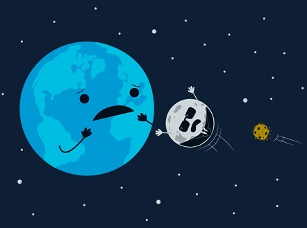

| C - Destroy the Moon to Save the Earth |
A giant asteroid of 25 km diameter is approaching the Earth, threatening the lives of all humans, animals, plants and pokemons. In 30 years, the impact will be so brutal that it will immediately destroy half of the planet's surface. The other half will suffer giant tsunamis, global earthquakes, and the fall of space debris. The few unfortunates who survive will have to face an endless winter, in a desert planet. There is no hope... or is there?
You have a plan! Slightly modifying the orbit of the Moon, we will be able to use her as a shield against the asteroid. We will nearly destroy the Moon, to save the planet Earth.

(c) Wirdou, http://www.neatoshop.com/product/The-Bodyguard
The greatest scientists in the world have calculated precisely the time when the impact will occur, in number of days. We also know the speed of rotation of the Moon around Earth, which is approximately 1 km/s. This speed can be increased or decreased by removing or adding mass to the Moon. More specifically, each ton of mass we add, the speed is reduced in 1 mm/s. And each ton we remove, the speed is increased in 1 mm/s. It is a very small change, but after many years it can make a big distance.
Finally, another essential parameter is the distance to the impact point. Supposing for simplicity a linear movement of the Moon, this distance can be defined as the distance from the Moon to the point where it should be to impact the asteroid, in the day of impact. For example, if the time to impact is 30 years and the distance to the impact is 2500 km, then we need to increase the speed of the Moon so that after 30 years it has travelled 2500 km more.
You have to compute the number of tons that have to be added or removed to destroy the Moon and save the Earth. The mass is assumed to be applied exactly at time 0.
The input contains several test cases. Each test case in described in a line with the following values: T S D. All of them are integer numbers. T is the time to impact, measured in days. S is the current speed of rotation of the Moon, in mm/s. And D is the distance to the impact point, in km, which can be positive or negative.
For each test case, the program has to produce one line. If
we have to add X tons of mass to the Moon (or if
the result is 0), the
output should be "Add X
tons". If we have to remove X
tons of mass, the output should be "Remove
X tons".
The number of tons X, has to be truncated
to an integer; e.g., if the value is 34.95, you have to output 34.
5
10950 1022083 2500
7300 1022083 2500
356 1027123 -525
12540 1082726 -2100
1000 1010023 0
Remove 2 tons
Remove 3 tons
Add 17 tons
Add 1 tons
Add 0 tons